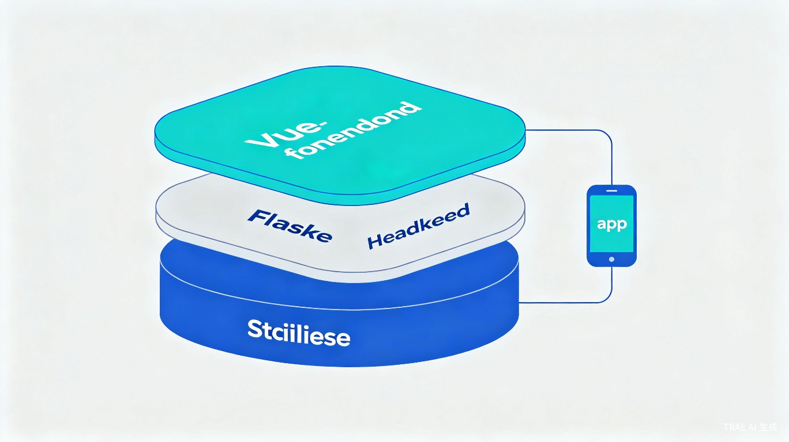

基于 TRAE AI 全流程开发的下一代企业级工作协同平台，集成项目管理、Bug 跟踪、需求管理、测试管理、物料管理、合同管理、考勤管理、知识库等 8 大核心模块，覆盖企业日常运营全场景。
TOPO 系统是一个功能完整的企业级组织架构管理与工作协同平台，采用前后端分离架构，同时提供 Web 网站和微信小程序两种客户端形态，覆盖 PC 端与移动端全场景使用。
核心用户为软件开发团队、通信设备企业、需要项目+物料+合同+考勤一体化管理的中小型企业。系统支持 7 种角色（管理员、项目经理、软件工程师、测试工程师、HR、部门经理、普通用户），满足不同岗位的协作需求。
项目全生命周期管理，支持成员分配、进度跟踪、成本管理、项目日志和自定义报表
9 种状态的标准工作流，优先级/严重程度管理，评论附件，统计趋势分析
需求文档树形结构、评审审批流程、追溯矩阵、版本对比与覆盖率统计
测试集/用例/执行记录、需求关联、报表生成、仪表板、用例导入导出
多级分类、仓库库位、库存操作（入库/出库/调拨/盘点）、序列号管理、库存预警
合同全生命周期、审批流程、站点/BOM/付款条款、配送跟踪、统计分析
位置打卡、班次管理、请假/加班多级审批链、考勤异常处理、统计报表
Markdown 编辑、全文搜索、外部分享 Token、导出 PDF/Word、点赞收藏置顶
在软件开发和企业管理实践中，团队常常面临一个普遍困境：工具碎片化。项目管理用 Jira、代码托管用 GitLab、文档协作用飞书、考勤用钉钉、合同用 OA 系统……各种工具之间数据割裂，信息流转效率低下，团队成员需要在多个平台之间频繁切换。
我一直在思考：能否用一个统一的平台，将企业日常运营中最高频的 8 大管理场景整合在一起，让团队在一个系统中完成从需求提出到项目交付的全流程协作？
判断：企业协同管理是一个刚需市场，但现有方案要么过于庞大（SAP、Oracle），要么过于单一（只做项目管理或只做考勤）。一个轻量级、一体化、开箱即用的解决方案，对中小型团队有极强的吸引力。
取舍：

| 层级 | 技术 | 说明 |
|---|---|---|
| Web 前端 | Vue.js 3 + Element Plus + Vite | 60+ 页面组件，ECharts 可视化，WebSocket 实时通知 |
| 小程序 | Taro 4 + React 18 + TypeScript | 多端发布（微信/支付宝/H5），Zustand 状态管理 |
| 后端 | Flask + SQLAlchemy + JWT | 35+ API 模块，220+ 端点，Blueprint 架构 |
| 数据库 | SQLite / MySQL | 14+ 核心表，支持开发/生产环境切换 |
| 实时通信 | Flask-SocketIO | WebSocket 推送，消息通知实时到达 |
| 开发工具 | TRAE AI IDE | AI 辅助编码、架构设计、调试、部署全流程 |
Vue.js 前端通过 REST API 与 Flask 后端通信，独立开发、独立部署
后端采用 Flask Blueprint 架构，35+ 个独立 API 模块，高内聚低耦合
Web 前端 + Taro 多端小程序，共享同一套后端 API
角色权限 + 模块权限 + 权限模板，灵活的企业级权限管控
体验方式：本项目提供以下两种体验方式，评审可根据偏好选择。
项目包含完整的交互式 HTML 展示文件，可直接在浏览器中打开体验系统的界面设计和功能布局。
支持在本地快速部署完整系统，体验所有功能模块的完整交互。
使用微信开发者工具打开小程序项目，可在模拟器中体验移动端功能。
整个 TOPO 系统从零到一的完整开发过程，全部在 TRAE AI IDE 中完成。以下是使用 TRAE 进行开发的完整流程和关键步骤。
通过 TRAE 的对话能力，逐步明确系统需求边界、功能模块划分、技术选型方案。TRAE 帮助我快速梳理出 8 大核心模块的业务逻辑和数据模型设计，并生成了完整的数据库 Schema。
Session: 需求分析与架构设计使用 TRAE 逐模块生成 Flask Blueprint 代码。每个 API 模块包含完整的 CRUD 操作、数据校验、权限控制和错误处理。TRAE 能够理解业务上下文，生成符合 RESTful 规范的 API 端点，并自动处理 SQLAlchemy 模型关联。
Session: 后端 API 模块开发基于 Element Plus 组件库，通过 TRAE 快速生成 60+ 个 Vue 页面组件。每个页面包含完整的列表展示、表单编辑、搜索筛选、分页排序等功能。TRAE 能够保持代码风格一致性，并自动处理路由配置和状态管理。
Session: 前端 Vue 页面开发使用 TRAE 基于 Taro 框架开发微信小程序版本，实现与 Web 端功能对等的移动端体验。TRAE 帮助处理了 Taro 的跨端兼容性问题，并生成了 TypeScript 类型定义。
Session: Taro 小程序开发通过 TRAE 进行前后端联调、API 接口测试、权限流程验证。TRAE 能够快速定位 Bug 根因，并提供修复方案。同时完成了 WebSocket 实时通知、邮件服务、数据导入导出等高级功能的集成。
Session: 系统集成与调试通过 TRAE 进行性能优化（日志系统、性能监控）、安全加固（JWT 认证、审计日志）、用户体验优化（移动端适配、响应式布局）。最终形成 v1.6.0 稳定版本。
Session: 性能优化与安全加固用自然语言描述需求，TRAE 自动生成符合业务逻辑的完整代码，大幅降低编码门槛
TRAE 能同时理解前端 Vue 组件、后端 Flask API、数据库模型之间的关系，确保一致性
在长对话中保持对项目架构和业务逻辑的理解，避免重复解释和代码冲突
遇到 Bug 时，TRAE 能快速分析错误日志、定位问题根因，并给出精准修复方案
截图 1 - 后端 API 开发：在 TRAE 中通过对话生成 Flask Blueprint 模块代码，包含完整的 RESTful API 端点、SQLAlchemy 数据模型和权限校验逻辑。
截图 2 - 前端页面开发：使用 TRAE 生成 Vue.js 页面组件，基于 Element Plus 实现数据表格、表单、搜索筛选等完整交互功能。
截图 3 - 系统联调测试：在 TRAE 中进行前后端联调，通过内置终端启动服务、查看日志、验证 API 响应，快速定位和修复集成问题。
截图 4 - 小程序开发：使用 TRAE 基于 Taro 框架生成小程序页面，实现与 Web 端功能对等的移动端体验。
截图 5 - 数据库设计：通过 TRAE 对话设计完整的数据库 Schema，包含 14+ 核心数据表和关联关系。
| 序号 | 开发阶段 | 任务描述 |
|---|---|---|
| 1 | 架构设计 | 系统需求分析、模块划分、技术选型、数据库 Schema 设计 |
| 2 | 后端开发 | Flask Blueprint 模块生成、RESTful API 端点开发、权限系统实现 |
| 3 | 前端开发 | Vue.js 页面组件生成、Element Plus 界面开发、路由与状态管理配置 |
| 4 | 小程序开发 | Taro 框架搭建、React 组件开发、多端兼容性处理 |
| 5 | 系统集成 | 前后端联调、WebSocket 通知集成、数据导入导出功能开发 |
| 6 | 优化完善 | 性能监控、日志系统、安全加固、移动端响应式适配 |
使用 TRAE AI IDE 开发 TOPO 系统，让我深刻体验到了 AI 辅助开发的巨大效率优势：
核心经验：AI 辅助开发的关键不在于"让 AI 写代码"，而在于用自然语言精确表达业务需求。需求描述越清晰、上下文信息越充分，TRAE 生成的代码质量就越高。将大型项目拆分为独立的模块逐步开发，每个模块在 TRAE 中保持独立的对话上下文，是管理复杂项目的有效策略。